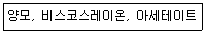
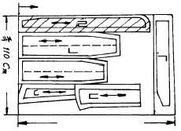
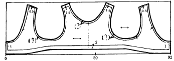
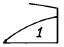
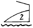
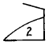
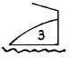
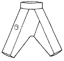

한복기능사 (2004-02-01 기출문제)
1과목: 임의 구분
1. 다음 중 봄, 가을에 주로 입던 남자 저고리는?
- 솜저고리,누비저고리
- 깨끼저고리,적삼
- 겹저고리,속저고리
- 겹저고리,홑저고리
(정답률: 알수없음)

2. 여름 옷을 선택하는 조건으로 옳지 않은 것은?
- 불양도체인 섬유
- 흡습성이 큰 섬유
- 통기성이 큰 섬유
- 내일광성이 큰 섬유
(정답률: 55%)
3. 여름철 남자 적삼에 가장 많이 쓰이는 옷감은?
- 숙고사, 진주사, 관사
- 항라, 삼팔, 부사견
- 방초, 자미사, 명주
- 모시, 옥양목, 항라
(정답률: 알수없음)
4. 야잠견을 틀리게 설명한 것은?
- 밤에만 잠을 자는 누에에서 뽑은 실로서 만든 견이다
- 산동주라고도 한다.
- 들누에 섬유를 말한다.
- 불순물이 많으나 강도가 커 실용적인 면이 있는 비단이다.
(정답률: 40%)
5. 천연섬유에 해당하는 것은?
- 명주섬유
- 나일론섬유
- 폴리에스테르섬유
- 재생섬유
(정답률: 44%)
6. 견섬유를 산아미 처리를 하였을 때 나타나는 효과가 아닌것은?
- 광택이 좋아진다.
- 비단 소리가 난다.
- 내산성이 좋아진다.
- 촉감이 좋아진다.
(정답률: 알수없음)
7. 다음 섬유들의 공통된 성능은?

- 알칼리에 강하다.
- 보온성이 크다.
- 내구성이 크다.
- 강도가 약한 편이다.
(정답률: 24%)
8. 면 섬유에 대한 설명이다. 틀린 것은?
- 면 섬유는 알칼리에는 강하나 산에는 약하다.
- 측면에는 5~6각형의 마디모양을 나타내고 있다.
- 면섬유의 천연적 꼬임은 미성숙한 섬유에서는 보이지 않는다.
- 열에 대한 성질은 명주보다는 우수하다.
(정답률: 알수없음)
9. 다음 중 종자 섬유인 것은?
- 무명
- 저마
- 황마
- 알파카
(정답률: 15%)
10. 나일론 스타킹은 섬유의 어떤 성질을 이용한 것인가?
- 염색성
- 열가소성
- 굴곡 강도
- 내균성
(정답률: 알수없음)
11. 상투를 고정시키는 기혼남자의 수식물의 하나는?
- 풍잠
- 망건
- 관자
- 동곳
(정답률: 알수없음)
12. 남자 바지 저고리의 전통 한복색으로 가장 많이 쓰여졌던 색은?
- 흰색, 옥색, 회색
- 자주색, 녹색, 갈색
- 검은색, 자주색, 녹색
- 흰색, 갈색, 보라색
(정답률: 알수없음)
13. 재래식 한복에서 결혼한 신부에게 입히던 치마,저고리의 색은?
- 노랑저고리,다홍치마
- 노랑저고리,남치마
- 녹색저고리,다홍치마
- 분홍저고리,남치마
(정답률: 40%)
14. 활옷에서 소매의 한삼은 무슨 색으로 배색 하는가?
- 노랑
- 흰색
- 남색
- 회색
(정답률: 39%)
15. 앵삼은 연두색 포(袍)에 깃, 도련 둘레단 소매끝에 무슨 색의 선(選)을 대었는가?
- 흰색
- 자색
- 흑색
- 남색
(정답률: 알수없음)
16. 노랑과 파랑의 가는 얼룩무늬의 치마를 입었을 때 멀리서보면 녹색과 같이 보이는 현상을 무엇이라 하는가?
- 명도대비
- 감산혼합
- 색상대비
- 병치혼합
(정답률: 알수없음)
17. 키가 작은 형의 사람 옷으로 적당한 것은?
- 옷의 강조부분을 상부에 둔다.
- 단에 이색적인 감으로 장식한다.
- 상하 이색으로 한다.
- 짙은 색은 하의 엷은 색은 상의로 한다.
(정답률: 알수없음)
18. 여자 한복의 전통적인 배색은?
- 옥색 치마, 흰색 저고리, 옥색 두루마기
- 옥색 치마, 노랑색 저고리, 옥색 두루마기
- 다홍색 치마, 흰색 저고리, 옥색 회장
- 연두 길에 색동 저고리, 자주색 치마
(정답률: 알수없음)
19. 한복의 구성 방법이 맞는 것은?
- 입체 구성
- 기하학적 구성
- 평면 구성
- 직선 구성
(정답률: 알수없음)
20. 한복의 특색이 아닌 것은?
- 고유의복과 외래의복의 이중구조 속에서 한복의 기본적인 형태를 지켜왔다.
- 선의 아름다움과 양감이 풍요롭다.
- 한복은 의, 상, 고 로 형성되어 있다.
- 역사의 흐름과 함께 기본 형태를 지키지 못했다.
(정답률: 알수없음)
2과목: 임의 구분
21. 여자 저고리 원형제도에서 깃나비의 치수는?
- 섶나비×3/4
- 섶나비×1/4
- 섶나비×1/2
- 섶나비×2/3
(정답률: 15%)
22. 등이 몹시 굽은 노인의 여자저고리를 제작하는데 있어서 섶의 부분 제도방법을 설명한 것 중 가장 옳은 것은?
- 양섶이 벌어지지 않도록 많이 여며지도록 제도한다.
- 양섶이 벌어지지 않도록 조금 여며지도록 재봉한다.
- 보통 여자저고리 식으로 하면 된다.
- 안섶은 표준체형대로 하면서 겉섶만 표준체형보다 약 2.5배 되도록 하여 단다.
(정답률: 알수없음)
23. 다음 도면은 남자 어린이 저고리 재단 부분이다. 잘못된 곳은?

- ㄱ
- ㄴ
- ㄷ
- ㄹ
(정답률: 알수없음)
24. 깃머리의 곡선 시접 처리로서 가장 적당한 것은?
- 재봉틀로 느리게 박는다.
- 고운 홈질로 땀을 고르게 한다.
- 반박음질로 고르게 한다.
- 굵은 홈질로 듬성듬성하게 한다.
(정답률: 34%)
25. 고쟁이(여자속옷)을 바느질할 때 통솔로 하는 것이 적당하다. 먼저 박아 뒤집는데 먼저 박는 시접은 어느 것이 적당한가?
- 1㎝
- 0.1㎝
- 0.3㎝
- 0.5㎝
(정답률: 24%)
26. 74㎝ 폭의 옷감으로 치마길이가 130㎝인 스란치마를 만들려고 한다. 필요한 천의 분량은?
- 약 9마
- 약 6마
- 약 4.5마
- 약 3마
(정답률: 알수없음)
27. 모시 적삼을 바느질할 때 가장 적당한 솔기는?
- 통솔
- 가름솔
- 곱솔
- 쌈솔
(정답률: 알수없음)
28. 한복의 바느질에 많이 사용되고 볼륨있는 선을 구성하며 바늘땀이 보이지 않은 깔끔한 솔기 바느질 방법은?
- 가름솔
- 통솔
- 쌈솔
- 홑솔
(정답률: 알수없음)
29. 도면과 같이 치마 조끼허리를 만들려고 한다. 목둘레와 소매둘레의 시접(?부분)은 몇㎝로 하는 것이 곡선이 가장 곱게 바느질 될 수 있는가?

- 0.5㎝ ~ 0.7㎝
- 1㎝ ~ 1.5㎝
- 2㎝ ~ 2.5㎝
- 3㎝ ~ 3.5㎝
(정답률: 40%)
30. 미싱의 실채기 기구는 어떤 작용을 하는가?
- 노루발을 앞뒤로 움직여 주는 작용
- 압력 조절을 하는 작용
- 바늘대를 상하로 움직이는 작용
- 위실의 장력을 유지하는 작용
(정답률: 알수없음)
31. 재봉틀을 분해 조립할 때 가장 먼저 해야 할일은?
- 바늘판을 떼고, 솔로 북집에 낀 먼지를 턴다.
- 바퀴의 벨트를 푼다.
- 미끄럼판을 열고, 안쪽을 기름 수건으로 닦는다.
- 실, 바늘, 북을 뺀다.
(정답률: 알수없음)
32. 도련 박음질에 있어서 땀새에 주름이 지지 않는 경우는?
- 바늘, 옷감, 실의 조절이 나쁠 때
- 톱니의 조절이 나쁠 때
- 북에 실이 잘못 감겼을 때
- 옷감, 노루발 조절을 잘못했을 때
(정답률: 알수없음)
33. 옥양목에 가장 적당한 실과 재봉틀 바늘의 종류가 바르게 연결된 것은?
- 견사 21D/3× 4 , 바늘 - 11~13호
- 면사 40 - 50번, 바늘 - 13~14호
- 면사 60 - 80번, 바늘 - 9~11호
- 폴리에스테르 40 - 50번, 바늘 - 11~13호
(정답률: 알수없음)
34. 모섬유에 적당한 다림질 방법 표시는?




(정답률: 알수없음)
35. 다음 중 건식 세탁의 장점이 아닌 것은?
- 비교적 가격이 저렴하다.
- 기름기 묻은 때를 잘 제거시킨다.
- 모양이 변하지 않는다.
- 통채로 세탁할 수 있다.
(정답률: 15%)
36. 세탁 준비로서 잘못된 것은?
- 주머니 속의 먼지를 털어낸다.
- 얼룩진 부분은 얼룩을 뺀다.
- 터진 부분이나 올이 풀린 곳은 세탁 후 깨끗하게 보수한다.
- 수축되기 쉬운 스웨터류는 치수를 측정하여 두었다가 건조할 때 치수에 맞추어 건조시킨다.
(정답률: 20%)
37. 유성얼룩이 아닌 것은?
- 연지
- 인주
- 인쇄잉크
- 쥬스
(정답률: 알수없음)
38. 풀감의 종류 중 전분풀이 아닌 것은?
- 쌀
- 밀가루
- 코온스타치(3 - 4%)
- CMC(0.5 - 1%)
(정답률: 25%)
39. 섬유를 장기간 보관시 취화(脆化)를 예방하기 위한 방법으로 틀린 것은?
- 때때로 세탁을 한다.
- 외기의 습기나 열에 영향을 받지 않은 장소를 선택하여 보관한다.
- 초산나트륨의 1% 용액에 담갔다가 건조시켜 보관한다
- 햇빛을 쪼여 습기를 없애고, 살균을 하여 보관한다.
(정답률: 15%)
40. 땀에 의한 손상과 변색에 주의해야 할 계절은?
- 봄철
- 겨울철
- 삼복 더위
- 가을철
(정답률: 알수없음)
3과목: 임의 구분
41. 식물성 비누로 적합하지 않은 것은?
- 야자
- 우지
- 미당
- 대두
(정답률: 42%)
42. 성인 남자바지의 원형제도에서 불필요한 부분은?
- 허리
- 마루폭
- 밑바대
- 작은 사폭
(정답률: 알수없음)
43. 면섬유나 마섬유의 다림질 온도로 적합한 것은?
- 130℃
- 100℃
- 180℃
- 80℃
(정답률: 알수없음)
44. 도포의 곁바대 섶단 수구단 끈접기 등의 바느질 법은?
- 숨은 상침
- 감침질
- 한올뜨기 시침
- 공그르기
(정답률: 알수없음)
45. 다음의 그림에서 ㉠ 부분의 명칭은?

- 마루폭
- 큰 사폭
- 작은 사폭
- 밑위
(정답률: 알수없음)
46. 조선시대 일반 민가에서 대사(大事) 때에 입었던 원삼의 색은 어느 것인가?
- 황 원삼
- 홍 원삼
- 초록 원삼
- 자적 원삼
(정답률: 알수없음)
47. 조선조 중기의 저고리의 특색이 아닌 것은?
- 민간 혼례용 겹저고리에는 거들지를 달았다.
- 직배래에서 약간 수구를 좁힌 곡선으로 변하고 있다.
- 섶은 안섶과 겉섶이 함께 넓었던 것이 차차 안섶이 좁아졌다.
- 깃 궁둥이가 목판깃에서 둥글어졌다.
(정답률: 알수없음)
48. 저고리 길이는 점점 길어지고, 치마길이는 짧아져서 통치마가 나오기 시작한 때는?
- 고려시대
- 조선시대
- 신라시대
- 개화기
(정답률: 50%)
49. 저고리 삼작이란?
- 속저고리, 겉저고리, 마고자
- 속적삼, 속저고리, 겉저고리
- 속저고리, 겉저고리, 솜저고리
- 속저고리, 겉저고리, 두루마기
(정답률: 알수없음)
50. 다음 중 조선시대 왕의 상복(常服)은?
- 면류관과 곤복
- 원유관과 강사포
- 익선관과 곤룡포
- 금관과 적초의
(정답률: 50%)
51. 조선왕조사회의 복식 중 관례복과 관계가 없는 것은 ?
- 입자(갓)
- 사모
- 복두
- 정자관
(정답률: 알수없음)
52. 조선시대 여인들의 장신구 중 중기부터 거의 자취를 감추게 된 것은?
- 비녀
- 첩지
- 지환
- 귀고리
(정답률: 42%)
53. 다음 설명 중 틀린 것은?
- 쪽댕기는 쪽찔 때 사용하는 것이다.
- 제비부리댕기는 처녀는 다홍색으로 화려한 금박을 하기도 하였다.
- 댕기는 조선시대 반드시 미혼녀만 사용했다.
- 큰댕기는 활옷을 입을 때의 뒷댕기이다.
(정답률: 알수없음)
54. 다음 중 틀린 것은?
- 한복을 입을 때는 고름 매는법, 치마 폭 여미는법 등에 유의해야 한다.
- 버선은 수눅이 중앙으로 마주보도록 신는다.
- 속치마는 겉치마 보다 2~3㎝ 짧게 입는다.
- 겉치마는 겉자락이 오른쪽으로 여며지게 입는다.
(정답률: 알수없음)
55. 전통속옷 중 겉치마를 풍만하게 하기 위하여 입었던 것으로 여러층으로 된 것은?
- 단속곳
- 무지기치마
- 스란치마
- 속속곳
(정답률: 62%)
56. 스란치마의 스란단에 사용했던 무늬로 공주나 옹주가 할수 있었던 무늬는?
- 용무늬
- 꽃무늬
- 봉황무늬
- 글자무늬
(정답률: 59%)
57. 통일신라 후 왕은 물론 골품에서 평인에 이르기까지 착용하던 두식은?
- 조우관
- 절풍
- 사모
- 복두
(정답률: 알수없음)
58. 상대복식의 기본형에 속하지 않은 것은?
- 포(袍)
- 당의
- 관모
- 대(帶)
(정답률: 50%)
59. 의복의 형태에 영향을 미치는 추구기능이 아닌 것은?
- 시대의 원리
- 미의 원리
- 계급의 원리
- 실용성의 원리
(정답률: 알수없음)
60. 조선시대 왕이 국난을 당했을 때 착용했던 복식은?
- 전립, 융복
- 면류관, 곤복
- 원유관, 강사포
- 익선관, 곤룡포
(정답률: 알수없음)